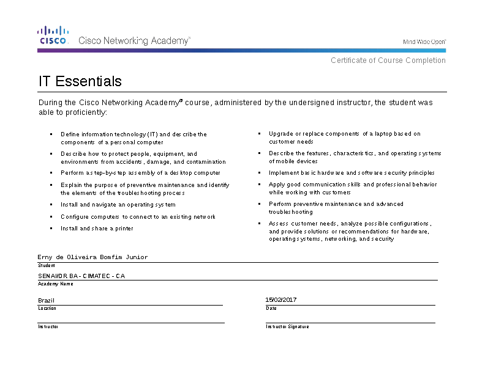
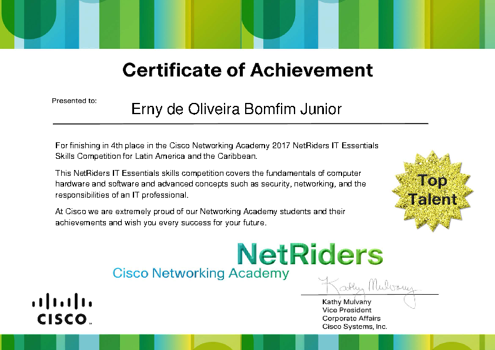
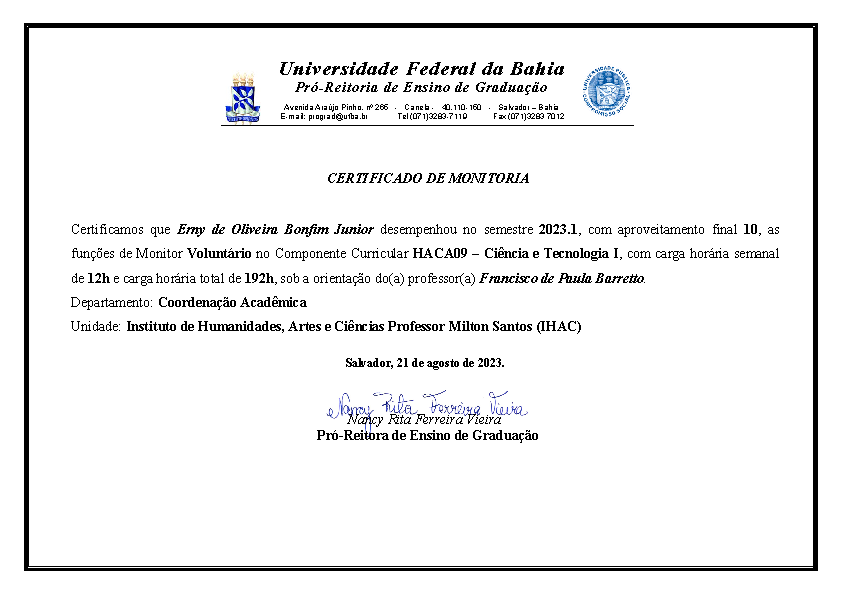

Formação Educacional
No ensino médio, enquanto membro do grêmio escola onde era vice-presidente, esteve participando ativamente de projetos que visavam tornar o ambiente escolar mais agradável e receptivo aos estudantes. Dentre eles, estão: Grupo de Estudos, Classificação dos Melhores, Festa Junina e Rádio Escola onde elaborou a documentação e esteve presente em todos os encontros junto à direção para discutir o projeto.
Ainda durante o ensino médio, Erny teve a oportunidade de ingressar no curso técnico de Redes de Computadores no SENAI CIMATEC do qual pôde, durante o projeto final, conhecer de perto as operações de uma empresa provedora de internet via fibra óptica e entender como ocorre a distribuição da rede utilizando o método FTTH (Fiber to the Home). Ainda durante o curso, participou do campeonato promovido pela Cisco Systems denominado NetRiders IT Essentials Skills Competition for Latin America and the Caribbean do qual ficou classificado em quarto colocado ganhando um voucher que lhe permitiria realizar uma certificação da CompTIA, além de obter uma carta de recomendação da Cisco.


